|
<< Click to Display Table of Contents >> Navigation: Rus > Руководство разработчика > Как писать скрипты и триггеры в TrackStudio > Как писать и отлаживать скрипты и триггеры под Eclipse |
Дополнительную функциональность в TrackStudio можно реализовать с помощью скриптов и триггеров. Скрипты обычно соответствуют вычисляемым дополнительным полям различных типов. Триггеры соответствуют событиям, происходящим с задачами, а именно: созданию задач, их редактированию и выполнению операций над ними. Скрипты вычисляются всякий раз при просмотре задачи, когда нужно отобразить значение поля, триггеры - при выполнении ассоциированных действий.
Скрипты и триггеры могут быть двух видов: интерпретируемые и скомпилированные. Интерпретируемые скрипты - это java-код, обрабатываемый интерпретатором Beanshell. Писать такие скрипты несколько проще, чем скомпилированные, т.к. не требуется согласования типов данных и наличия JDK для компиляции.
Скомпилированные же скрипты имеют ряд серьезных преимуществ:
•во-первых, они выполняются быстрее из-за того, что не нужно загружать и инициализировать интерпретатор
•во-вторых, если скрипт скомпилировался — в нем хотя бы нет синтаксических ошибок
•в-третьих, в скомпилированных скриптах вы можете использовать всю мощь языка Java. Например, наследование и статические переменные
Удобнее всего писать скрипты в IDE (интегрированной среде разработки).
Eclipse — кроссплатформенная свободная интегрированная среда разработки приложений. Развивается и поддерживается Eclipse Foundation. Установить Eclipse можно и на Windows, и на Linux, и на OS X. Скачать Eclipse можно с сайта проекта. Пользователи Ubuntu могут установить Eclipse прямо из Центра приложений.
1.Установите и запустите Eclipse IDE.
2.Создайте где-нибудь workspace.
3.Откройте меню File → New → Java Project
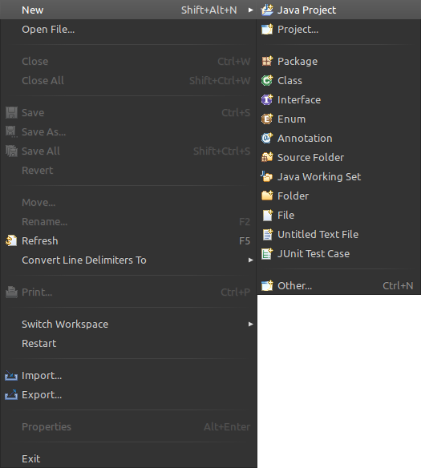
4.Создайте новый проект
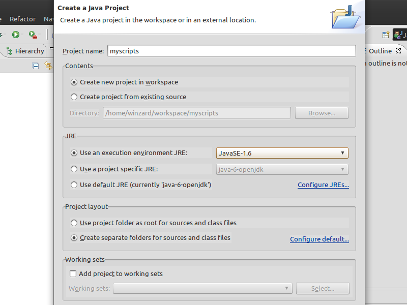
5.Нажмите кнопку Next
6.На следующем экране перейдите на закладку Libraries
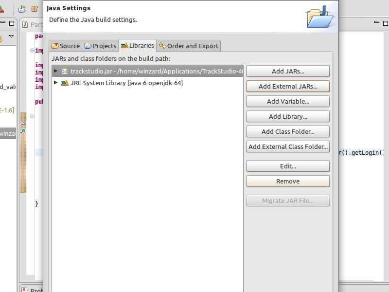
7.Нажмите кнопку Add External JARs
8.Выберите библиотеку trackstudio.jar (webapps/TrackStudio/WEB-INF-lib/trackstudio.jar)
9.Нажмите кнопку Finish
На этом создание и настройка проекта закончена. Напишем и скомпилируем какой-нибудь скрипт, использующий TrackStudio API. Например, скрипт, выводящий список участников задачи (из примеров)
1.В левой панели откройте папку вашего проекта и на подпапке src кликните правой кнопкой мыши
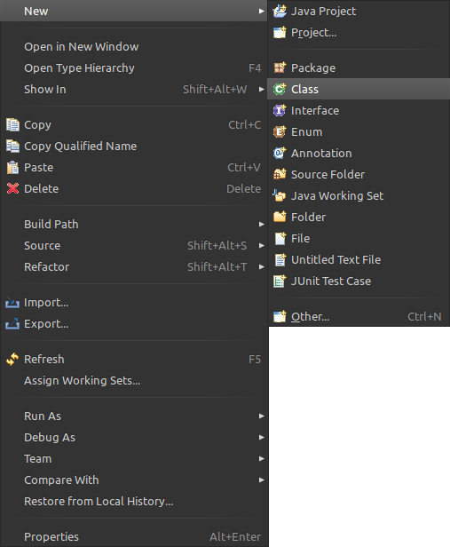
2.В открывшемся меню выберите New → Class
3.Введите Package Name: scripts.task_custom_field_value
4.Введите название класса: Participants
5.Выберите интерфейс: TaskUDFValueScript
6.Нажмите кнопку Finish, чтобы закончить создание класса
7.Вставьте метод calculate из примера или напишите свой.
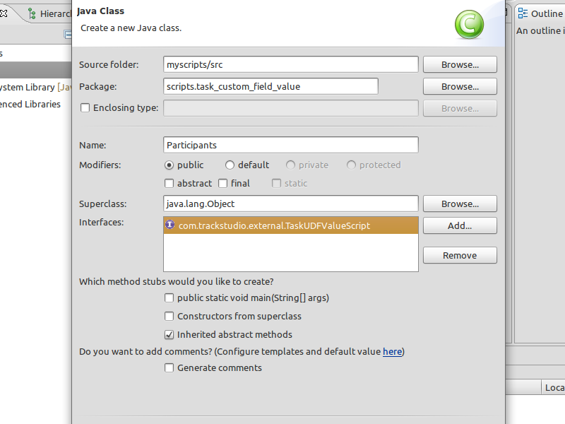
Обратите внимание, что Eclipse сразу же нашел кучу ошибок в коде. Если навести курсор на подчеркнутые красной линией слова, в выпадающем меню Eclipse предложит варианты решения. В данном случае нужно импортировать соответствующие классы. Сделайте это.
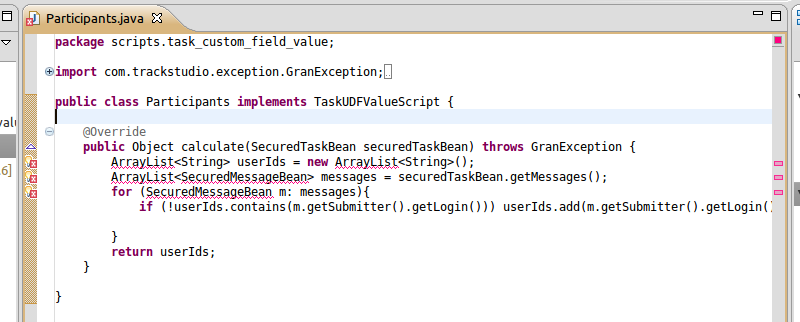
В данном случае в Eclipse включена автоматическая компиляция классов, поэтому после исправления ошибок в папке workspace/myscripts/bin должна появиться подпапка scripts/task_custom_field_value, а в ней класс Participants.class
Этот класс, а лучше - всю папку scripts, скопируйте в папку etc/plugins вашего экземпляра TrackStudio. Папки scripts при этом должны совместиться.
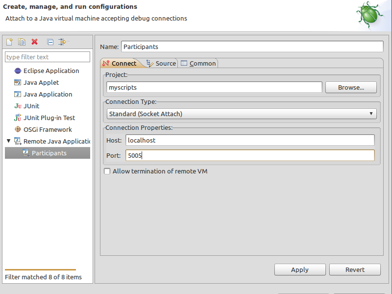
1.Откройте в любом текстовом редакторе (не в Word) файл startJetty.vmoptions, который лежит в корне вашего экземпляра TrackStudio.
2.Добавьте в его конец строку -Xdebug -Xrunjdwp:transport=dt_socket,server=y,suspend=n,address=5005
3.Запустите ваш экземпляр TrackStudio
4.Перейдите в Eclipse в меню Run → Debug Configurations
5.Выберите Remote Java Application и нажмите иконку New вверху
6.Введите номер порта 5005
7.Нажмите кнопки Apply и Debug
8.Из меню Eclipse Run вы можете управлять точками останова. Поставьте одну точку останова где-нибудь в начале метода calculate класса Participants
9.Откройте браузер
10.Откройте в нем ваш экземпляр TrackStudio и войдите в систему
11.Создайте для какого-нибудь процесса дополнительное поле типа "Пользователь" и подключите к нему класс Participants
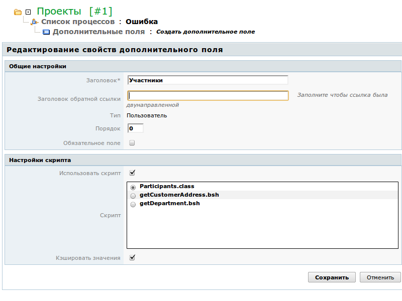
Далее перейдите к задаче, использующей это вычисляемое поле. Если всё сделано правильно, выполнение скрипта должно остановиться в указанной точке. Eclipse предложит открыть окно отладки и, если вы согласитесь, покажет код скрипта с выделенной строчкой в месте останова.
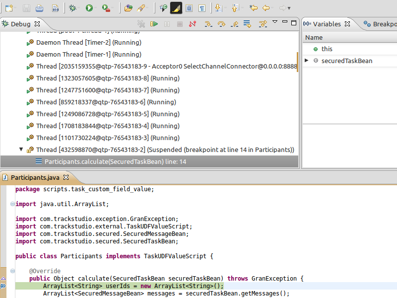
Во вкладке Variables вы можете увидеть объявленные в области видимости переменные и их значения, через вкладку Debug — управлять выполнением скрипта.
Кнопка Resume (F8) продолжит выполнение кода до следующей точки останова. Кнопка Step Into (F5) выполнит текущую строчку кода с заходом внутрь метода, если в данной строчке вызывается метод какого-нибудь класса. Кнопка Step Over (F6) просто выполняет строчку, без захода в методы. Кнопка Step Return (F7) выполняет весь код до выхода из метода и передает управление "наверх".
Подключите к Eclipse документацию TrackStudio Javadoc, которая расположена в папке docs вашего экземпляра TrackStudio. Для этого:
1.В левой панели раскройте узел Referenced Libraries
2.Выберите trackstudio.jar
3.Правой кнопкой мыши раскройте контекстное меню и выберите пункт Properties (или нажмите Alt-Enter)
4.Выберите пункт Javadoc Location
5.Укажите папку javadoc вашего экземпляра TrackStudio (docs/javadoc)
6.Нажмите кнопку Apply
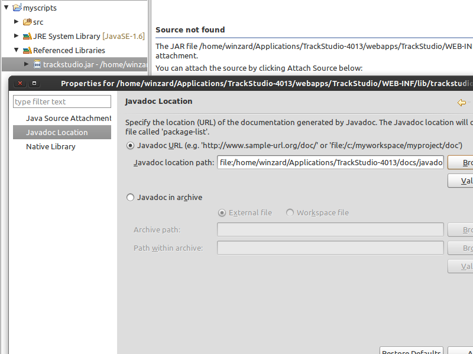
В нижней панели редактора Eclipse есть вкладка Javadoc. В ней можно видеть описание классов и методов, на которые указывает курсор.
Если начать вводить название класса и нажать комбинацию клавиш Ctrl-Пробел, Eclipse предложит варианты классов для выбора, при этом также показывается описание класса из Javadoc.
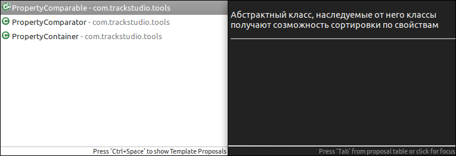